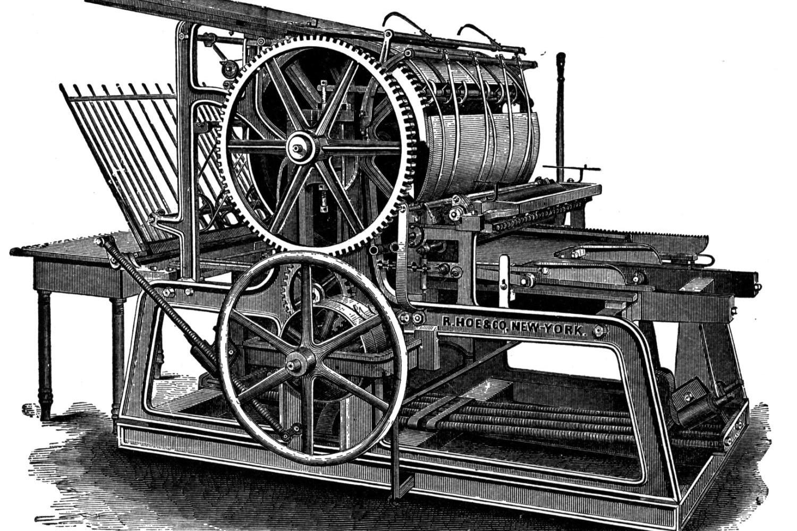
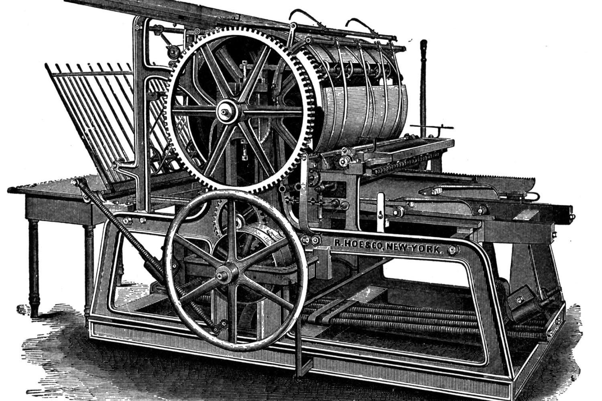

La Stampa
 

Il Torcitoio


Nuove Armi

Mercenari


Torcitoio
Il torcitoio in immagine è una riproduzione sulla base di illustrazioni del XV secolo.
Può torcere contemporaneamente la seta di circa 80 rocchetti completandoli in 10 ore con soli due addetti.
Una persona poteva muovere fino a 150 rocchetti per 8 ore con qualche sosta.
Archibugio
Una delle prime armi da fuoco portatili, pesante e poco maneggevole. Si carica con polvere e pallottola di piombo.
I più antichi erano ad avancarica, per l’accensione si usò dapprima carbone acceso e in seguito una bacchetta di ferro arroventata.
Probabilmente il nome deriva dal basso tedesco haakbuse "canna con dispositivo a uncino per l'accensione", che si modificò in Francia in harquebusche e poi harquebuse; l'italiano archibugio, che deriva dal francese, ha subito l'influenza delle parole arco e bugio "perforato".
Cannoni
Elemento fondamentale della nuova strategia militare furono i cannoni, le prime armi da fuoco a non essere imbracciate da soldati, i primi dei quali erano ad avancarica
Il termine si usa ancora oggi per indicare le bocche da fuoco da tiro diretto
Durante il XV secolo vennero ampiamente utilizzati in zone molto distanti tra loro, dall'Impero Ottomano alla Gran Bretagna
Mons Meg
Il cannone in immagine è denominato Mons Meg ed è stato costruito nel 1449 in Scozia
Pesa 7000 kilogrammi, è lungo 4,6 metri e spara proiettili calibro 510.
Oggi è esposto a Edimburgo, durante il XVI secolo è stato simbolo dell'esercito scozzese in occasione degli scontri con la corona inglese.
Fanteria
Durante il XIV e il XV secolo, la cavalleria vide ridimensionata la sua aura di invincibilità
In diverse battaglie, tra cui quelle di Courtrai e di Bannockburn la cavalleria pesante fu sconfitta dalla fanteria
Wapenhandelinge
L'immagine è una copia a colori del ritratto originale, risalente al 1608, simbolo della rivoluzione militare
Il nome, tradotto dall'olandese, significa letteralmente maneggiare le armi, simile all'inglese weapon handling
Torcitoio
La prima documentazione iconografica che si conosca si trova negli statuti della “Arte della Seta” di Firenze del 1487, copia di un manoscritto del secolo precedente e conservato alla Biblioteca Laurenziana di Firenze.
Gutenberg
Johannes Gutenberg fu l'inventore della stampa a caratteri mobili
Questa innovazione rese i libri molto più accessibili ed economici, e contribuì alla diffusione del protestantesimo
B42
L'esemplare in immagine è una B42, ovvero una Bibbia con 42 righe per facciata
Gutenberg iniziò a stamparle nel 1453, vennero venduti 40 esemplari stampati su pergamena e 140 stampati su carta di canapa
In quanto primo documento stampato con la tecnica a caratteri mobili in Occidente, è stato inserito nell'indice della Memoria del Mondo dall'UNESCO
Stampa a caratteri mobili
La stampante a caratteri mobili in immagine è stata costruita all'inizio del XIX secolo dalla R. Hoe & Co., ma si ispirava ancora al progetto originale di Gutenberg
Compagnie di ventura
Caratteristiche del periodo furono le compagnie di ventura, gruppi di mercenari detti soldati di ventura, guidati da un capitano di ventura.
Il Condottiere
Il ritratto in immagine fu dipinto da Leonardo da Vinci nel 1472, rappresenta un capitano di ventura, ed è oggi ubicato al British Museum
Almogàver
Una delle prime compagnie di ventura fu quella degli Almogàver, soldati della Corona d'Aragona che vennero inizialmente impiegati nella reconquista, e che successivamente divennero mercenari al soldo di signori e imperatori di tutta Europa.
Si allontanarono dalla Spagna e dalla Sicilia dopo la Pace di Caltabellotta nel 1302 e continuarono la loro attività nel Levante per tutto il XIV secolo, a fianco dei crociati e della corona aragonese.
Il termine Almogàver potrebbe derivare dall'arabo al-muqafir ("predatore"), al-mugavar ("disturbatore") oppure al-mukhavir ("portatore di notizie")
Mercenari svizzeri
La Svizzera gode oggi della fama di paese neutrale e pacifico, ma in passato ha dato i natali a numerosi gruppi di mercenari, famosi in tutta Europa per la loro tattica di combattimento
Con l'avvento dell'artiglieria nel XVI secolo e con la concorrenza di altre compagnie come i lanzichenecchi i mercenari svizzeri entrarono in declino
Le guardie svizzere in Vaticano sono una rimanenza di questo fenomeno
Luzerner Chronik
L'immagine è tratta da Luzerner Chronik, una cronaca della storia della confederazione svizzera, scritta e illustrata da Diebold Schilling, e pubblicata nel 1513
Rappresenta dei mercenari svizzeri di ritorno in patria dopo aver espugnato Cremona
Nuove armi
L'arte della guerra smise di essere prerogativa dei nobili, si ebbe una democratizzazione
Compagnie di ventura
Le compagnie furono occasione di riscatto sociale, durante il XV secolo da questo settore emersero personaggi di rilievo, tra i quali il primo duca di Milano Francesco Sforza